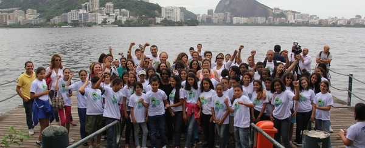

Lançamento Site Programa Agenda Água na Escola - Dia Mundial da Água
21/05/2013

Realizado no dia 21 de Março de 2013 o lançamento do site “Agenda Água na Escola”, na Lagoa Rodrigues de Freitas, no Espaço Encontro das Águas, na zona sul do Rio de Janeiro, e contou com a presença do secretário estadual do Ambiente, Carlos Minc, e a presidente do Instituto Estadual do Ambiente, Marilene Ramos.
O evento foi realizado juntamente com os alunos de escolas municipais de Resende e Porto Real, que participaram da coleta de monitoramento de água feita com os Ecokits á margem da lagoa, acompanhados por técnicos da SEA e do Inea, os alunos do Programa Agenda Água na Escola, realizaram testes para detectar os níveis de PH, ferro, fosfato e amônia – parâmetros ambientais normalmente utilizados para identificar a qualidade da água. Os testes realizados indicaram que a Lagoa Rodrigo de Freitas está dentro dos parâmetros de normalidade.
Durante a coleta, o aluno Breno da Silva Amaral, que é deficiente visual, participou da atividade inserindo uma sonda dentro da água da lagoa – um método mais preciso para medir parâmetros ambientais como oxigênio, PH e ferro. O teste demonstrou que a quantidade de oxigênio na água ainda estava abaixo do esperado, tendo sido detectado 2,3ml/l (o ideal é acima de 5,0ml/l). Minc acrescentou que esse fato é decorrente da mortandade de peixes que aconteceu na semana anterior. “Após as chuvas, todo material orgânico que está na rua vem para a Lagoa Rodrigo de Freitas. Com a pouca troca entre a água do mar e a da lagoa, ocorre então a diminuição do oxigênio. Com isso, os peixes morrem. É preciso abrir o Canal do Jardim de Allah para melhorar a oxigenação da lagoa”, afirmou. Breno da Silva Amaral aprovou a iniciativa, afirmando que ações como essa podem ajudar a despoluir muitos rios do estado. “Quero ajudar a despoluir o Rio Paraíba do Sul. Fazendo esses testes, podemos contribuir para despoluir muitos outros rios”, disse o estudante da escola municipal Noel de Carvalho, da cidade de Resende, na Região do Médio Paraíba.
O evento contou com a participação de Vera Lucia Teixeira, Coordenadora Regional da ONG Nosso Vale Nossa Vida executora do Agenda Água na Região Hidrográfica Médio Paraíba, também Presidente do Comitê Médio Paraíba do Sul e vice presidente do CEIVAP – Comitê para Integração da Bacia do Rio Paraíba do Sul, e de professores, técnicos regionais e da Coordenadora Geral do Programa Agenda Água na Escola, Fátima Casarim - INEA/SEA.
O site do Programa Agenda Água na Escola foi idealizado para funcionar como uma plataforma simples para que estudantes insiram os dados da análise de águas coletadas durante expedições de monitoramento dos rios adotados por suas escolas. Os alunos poderão ainda, através do site, trocar experiências entre escolas de todo o estado. Curta e participe! Mais fotos e informações você pode encontrar acessando nossa página no facebook.
Nós cuidamos da água todos os dias!
Durante a coleta, o aluno Breno da Silva Amaral, que é deficiente visual, participou da atividade inserindo uma sonda dentro da água da lagoa – um método mais preciso para medir parâmetros ambientais como oxigênio, PH e ferro. O teste demonstrou que a quantidade de oxigênio na água ainda estava abaixo do esperado, tendo sido detectado 2,3ml/l (o ideal é acima de 5,0ml/l). Minc acrescentou que esse fato é decorrente da mortandade de peixes que aconteceu na semana anterior. “Após as chuvas, todo material orgânico que está na rua vem para a Lagoa Rodrigo de Freitas. Com a pouca troca entre a água do mar e a da lagoa, ocorre então a diminuição do oxigênio. Com isso, os peixes morrem. É preciso abrir o Canal do Jardim de Allah para melhorar a oxigenação da lagoa”, afirmou. Breno da Silva Amaral aprovou a iniciativa, afirmando que ações como essa podem ajudar a despoluir muitos rios do estado. “Quero ajudar a despoluir o Rio Paraíba do Sul. Fazendo esses testes, podemos contribuir para despoluir muitos outros rios”, disse o estudante da escola municipal Noel de Carvalho, da cidade de Resende, na Região do Médio Paraíba.
O evento contou com a participação de Vera Lucia Teixeira, Coordenadora Regional da ONG Nosso Vale Nossa Vida executora do Agenda Água na Região Hidrográfica Médio Paraíba, também Presidente do Comitê Médio Paraíba do Sul e vice presidente do CEIVAP – Comitê para Integração da Bacia do Rio Paraíba do Sul, e de professores, técnicos regionais e da Coordenadora Geral do Programa Agenda Água na Escola, Fátima Casarim - INEA/SEA.
O site do Programa Agenda Água na Escola foi idealizado para funcionar como uma plataforma simples para que estudantes insiram os dados da análise de águas coletadas durante expedições de monitoramento dos rios adotados por suas escolas. Os alunos poderão ainda, através do site, trocar experiências entre escolas de todo o estado. Curta e participe! Mais fotos e informações você pode encontrar acessando nossa página no facebook.
Nós cuidamos da água todos os dias!